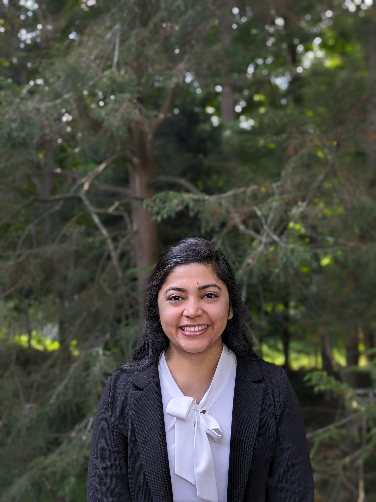
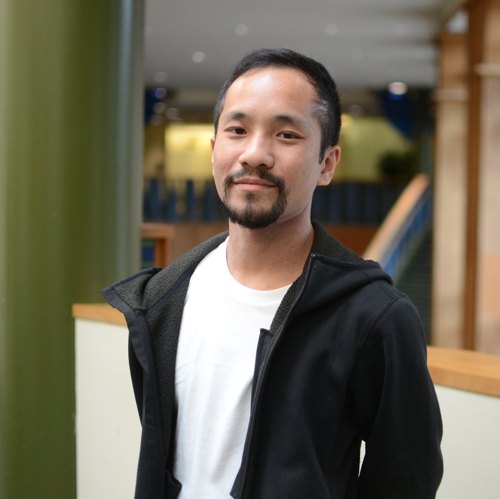
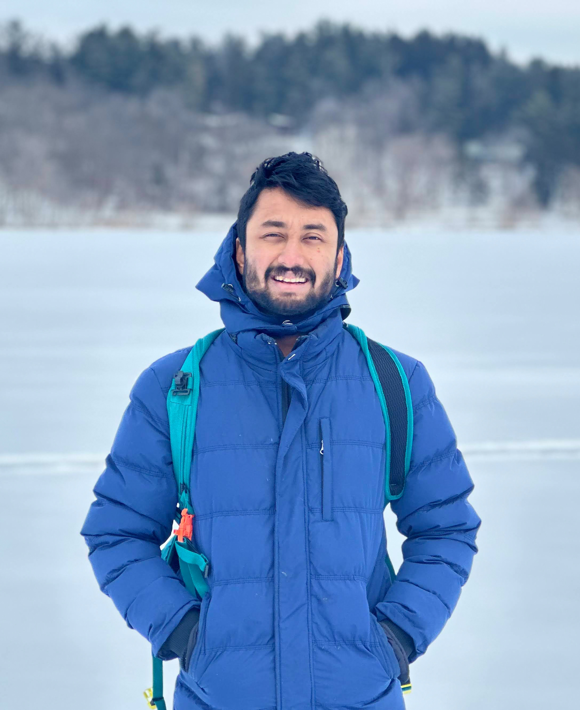
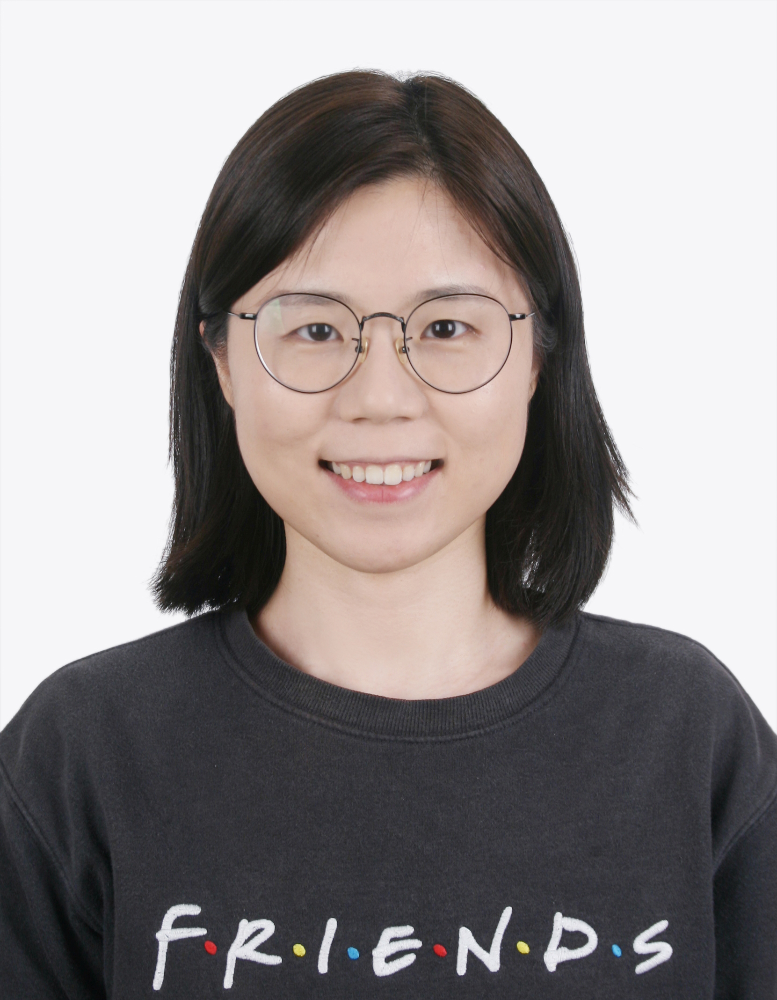

People
Bhramar Mukherjee, PhD

Professor Bhramar Mukherjee is the Anna M.R. Lauder Professor of Biostatistics and Professor of Chronic Disease Epidemiology at the Yale School of Public Health (YSPH). Professor Mukherjee serves as the inaugural Senior Associate Dean of Public Health Data Science and Data Equity at YSPH. She holds a secondary appointment in the Department of Statistics and Data Science and is affiliated with the MacMillan Center and the Institute for the Foundations of Data Science. She serves on the Yale Cancer Center Director’s cabinet.
Alicia E. Boyd, PhD

Alicia Boyd, PhD, is an associate research scientist in the Department of Biostatistics at Yale School of Public Health. She received her PhD in Computer Science from DePaul University in Chicago, Illinois, and completed her postdoctoral fellowship at New York University. She is an affiliate researcher with the Interdisciplinary Software Practice Improvement Research and Development (or INSPIRED) Lab at George Mason University and Gadiraju Lab at Wellesley College.
Dr. Boyd is a social-technical researcher guided by wisdom, patience, and thoughtfulness. Her research is at the intersection of technology, privacy, and reflexivity, which aims to implement reflexive practices in quantitative areas such as software development, large language models, data science, and machine learning. Some of her recent and ongoing projects include the investigation of improving disability representation in generative artificial intelligence models and how to incorporate reflexive practices in gig work design. Within the Data Science Data Equity (DSDE) Initiative, Dr. Boyd hopes to develop a reflexive praxis for technical applications.
Howard Baek, M.S.

Howard Baek is a Data Scientist with a background in biostatistics and computer science. He holds a Master of Science in Biostatistics, and a Bachelor of Science in Statistics with a minor in Mathematics, both from the University of Washington. He is working towards a Post-Baccalaureate Degree in Computer Science from Oregon State University.
Currently, he is a Data Scientist I at Yale University, where he develops and executes statistical models for analyzing EHR and biobank datasets, and creates software packages to enhance data analysis and accessibility.
Shelby Golden, M.S.

Shelby Golden is a data scientist with a background in computational mathematics, molecular biology, and biochemistry. She holds a Master of Science in Applied Computational Mathematics from Johns Hopkins University and dual Bachelor of Science degrees in Molecular, Cellular, Developmental Biology and Biochemistry with a minor in Engineering in Applied Mathematics.
At the Data Science and Data Equity Initiative, Shelby is responsible for managing the group’s GitHub repository, ensuring compliance with data use Agreements and IRBs, overseeing data harmonization and warehousing efforts, providing AI/ML consultation, offering Python support, developing APIs, and collaborating on analytic projects. Her expertise in both computational sciences and biology allows her to effectively bridge the gap between data and domain knowledge.
Sohani Sirdeshmukh, M.A.

Sohani received her Master in Sustainable International Development from Brandeis University, and a Post Graduate Diploma and Bachelor’s in Bioinformatics, Biochemistry, Microbiology and Chemistry. She has experience in HIV and infectious diseases research and science content development, including conducting clinical trials, analyzing data, and collaboratively developing educational materials for middle and high school students in low-income communities.
Sohani has successfully led initiatives across diverse sectors. With over a decade and half of experience in global health, infectious diseases, and education, Sohani’s expertise in program management, financial acumen, and communication skills have been instrumental in securing funding, building relationships, and driving positive outcomes. Her passion for innovation and ability to foster cross-functional collaboration have enabled her to drive positive outcomes in her roles.
Lillian Rountree

Lillian Rountree joined the Mukherjee Lab in August 2023, when she began her PhD at the University of Michigan. She did her undergraduate studies at Columbia University, graduating in May 2023 with a Bachelors of Arts in Statistics and French. Her research interests include fairness in clinical modeling, methods for infectious disease transmission, and her dissertation focus, which is currently undiscovered. In her other life, outside of research and academia, she is a fiction writer; in her free time beyond that, she loves literature, pop culture, and meandering walks.
Yi-Ting Lin

I am a second-year PhD student in the Department of Biostatistics at the University of Michigan. I got my bachelor’s degree in economics and statistics from National Taipei University and my master’s degree in biostatistics from Johns Hopkins University. My research interests are spatial statistics, causal mediation analysis, and environmental statistics.
Ritoban Kundu

I am currently a fourth-year Ph.D. student in the Department of Biostatistics at the University of Michigan. Three years ago, I relocated to the United States from my hometown of Kolkata, India. I earned my undergraduate and master’s degrees in Statistics from the Indian Statistical Institute in Kolkata. My current research focuses on addressing selection bias in electronic health records data and conducting Causal mediation analysis with network interference. Beyond my academic pursuits, I have a keen interest in traveling, hiking, photography, watching arthouse films, and participating in various sports such as badminton, cricket, squash, biking, and skiing.
Jiacong Du

I’m a 5th year PhD student in Biostatistics at the University of Michigan. My dissertation focuses on methods development for using electronic healthrecords (EHR), specifically addressing confounding, selection bias and bias from clinically informative missingness.
Youqi Yang

Youqi Yang is a second-year PhD candidate in Biostatistics at the University of Michigan, working under the mentorship of Dr. Bhramar Mukherjee and Dr. Walter Dempsey. His research focuses on causal inference, data integration, and survey analysis. In his free time, Youqi enjoys exploring pop culture, discovering great movies, and playing badminton. He also runs a “growing” food Instagram account with 24 followers.